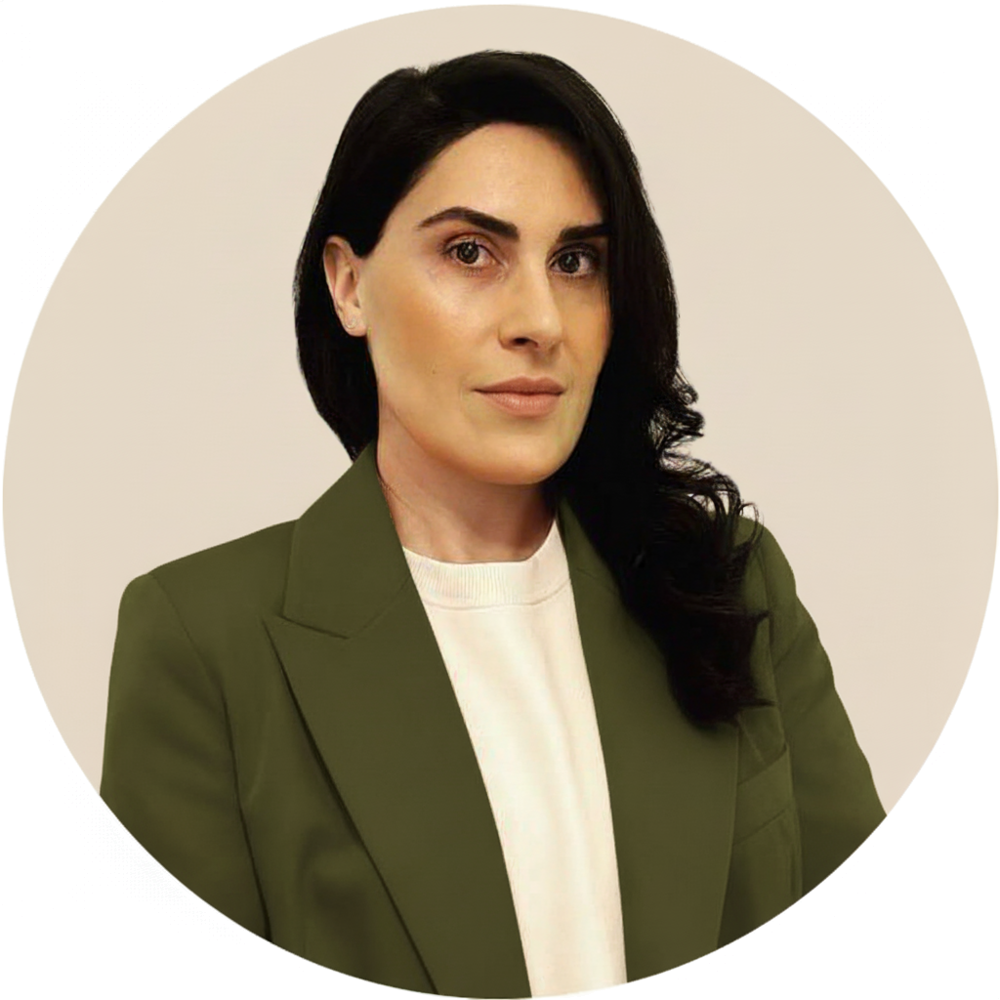

ტრენინგი
საერთაშორისო სერტიფიკაციებზე ორიენტირებული პრაქტიკული კურსები.
კურსების ნახვაგამარჯობა, მე ვარ თინათინი — გამოცდილი IT ბიზნეს ანალიტიკოსი (CBAP®), პროექტის მენეჯერი (PRINCE2®) და პროდუქტის მფლობელი (PSPO II®), 10+ წლიანი გამოცდილებით.

ვარ პირველი ქართველი სერტიფიცირებული Agile ანალიზის პროფესიონალი (AAC®).
ჩემი მიზანია ღირებულებაზე ორიენტირებული ციფრული პროდუქტების შექმნა და ბიზნესის ეფექტიანობის გაუმჯობესება.
საერთაშორისო სერტიფიკაციებზე ორიენტირებული პრაქტიკული კურსები.
კურსების ნახვაბიზნეს ანალიზის, პროექტისა და პროდუქტის მართვის მხარდაჭერა.
კონსალტინგის ნახვაინდივიდუალური კარიერული და პროფესიული მხარდაჭერა.
შეხვედრის დაჯავშნა